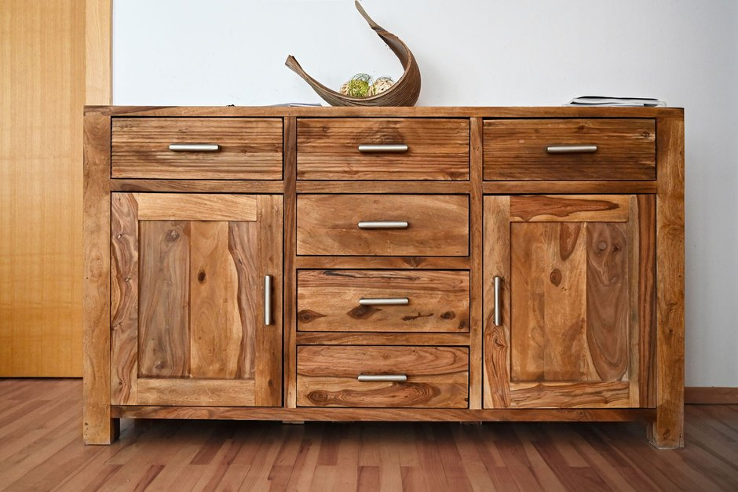

Cómo crear espacio oculto en tu pequeño apartamento

Photo: adrian vieriu / Pexels
«Crear espacio oculto» significa sobre todo usar rincones sin aprovechar para guardar cosas con discreción. Estas son ideas sencillas y seguras que no alteran la estructura de la vivienda.
1. Debajo de la cama y del sofá
Cajones o cajas planas bajo la cama sirven para ropa de cama, zapatos y mantas. Deja libre la ventilación alrededor de radiadores y rejillas de calefacción.
2. Detrás de las puertas
Un organizador colgante o un perchero de ganchos aprovecha un espacio perdido. Comprueba que la puerta sigue cerrando bien.
3. En altura
Los estantes sobre las puertas o cerca del techo sirven para objetos ligeros y poco usados. Fíjalos bien a la pared (consulta nuestra guía de estantes de pared).
4. Muebles de doble uso
Un puf con almacenaje, un banco-baúl, una cama con cajones o una mesa de centro con compartimento esconden mucho sin ocupar más.
5. En esquinas y huecos
Estantes de esquina o muebles estrechos con ruedas aprovechan los rincones. No bloquees el acceso al cuadro eléctrico, al contador, a la caldera, al calentador, a las salidas ni a los detectores de humo.
Qué no hacer
- Taladrar o abrir paredes o suelos sin permiso del propietario y sin comprobar cables y tuberías.
- Esconder objetos junto a una fuente de calor o en un espacio sin ventilación.
- Guardar productos inflamables, gasolina, bombonas de gas o productos químicos en la vivienda.
Mantén un sistema sencillo
Etiqueta los recipientes y anota su contenido. Un espacio oculto solo sirve si encuentras con facilidad lo que has guardado en él.
Con estas ideas, un apartamento pequeño parece más despejado sin ningún riesgo para la seguridad.